6주차 · 이미지 분석 1-2
탐지와 분할
‘무엇이 있다’ 와 ‘어디에 있다’ 는 어떻게 다른 문제인가
한양대학교 도시공학과 · 19 YOLO.ipynb · 20 Unet.ipynb
오늘의 질문
‘무엇이 있다’ 와 ‘어디에 있다’ 는
어떻게 다른 문제인가?
분류기 하나를 이미 가지고 있다. 그걸로 위치까지 알아내려면 무엇을 더 해야 하나.
1부 · 탐지
질문이 세 번 바뀐다
맨 오른쪽이 지금 가장 뜨거운 연구다 — 12주차 멀티모달에서 다시 만난다.
2012년 AlexNet 을 기점으로 갈라진다
Object Detection in 20 Years: A Survey
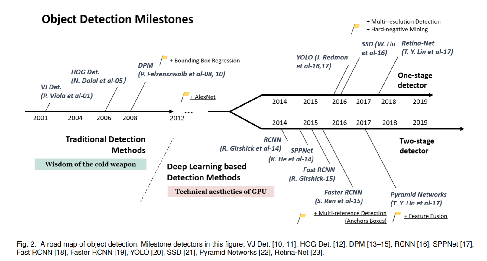
객체 탐지 20년 로드맵 — 2012년 AlexNet 이후 딥러닝 기반으로, one-stage 와 two-stage 로 갈린다
오른쪽이 두 갈래로 갈린다 — 아래가 R-CNN 계열(two-stage), 위가 YOLO 계열(one-stage).
R-CNN — 잘라서 물어본다
2014 · two-stage
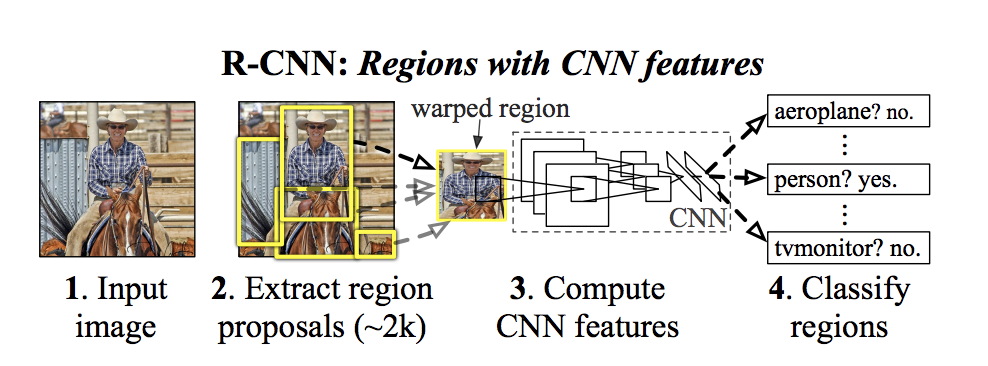
R-CNN 4단계 — 입력, 영역 제안 2천 개, CNN 피처 계산, 영역 분류
구조적인 약점
정확하지만 느리다
후보 2천 개를 하나씩 CNN 에 넣는다 — 사진 한 장에 수십 초.
정확도는 투 스테이지가 높았다. 약점은 속도다 — 그래서 “한 번에 끝내자” 는 발상이 나온다.
YOLO — 한 번만 본다
2016 · Joseph Redmon · one-stage
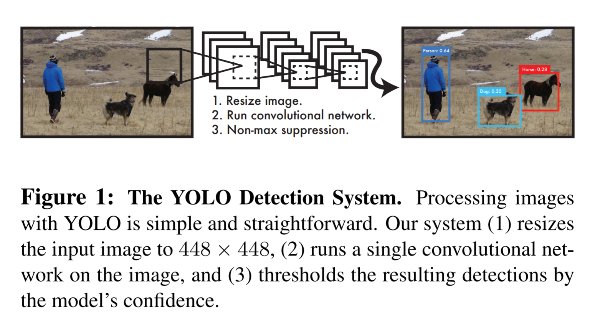
YOLO Detection System — 448 리사이즈, 합성곱 한 번, 신뢰도로 걸러내기
박스를 만드는 단계 자체를 없앴다 — 처음부터 균질한 격자로 자른다
칸 하나가 박스와 클래스를 동시에 내놓는다 — 한 텐서 안에서
네트워크를 한 번만 통과한다 — 그래서 실시간, 초당 45장
이름은 하나, 만든 사람은 여럿
2026년 9월 기준
버전 번호는 성능 순위가 아니다. 분야에 따라 옛 버전이 더 나은 경우가 흔하다.
울트라리틱스 계열은 AGPL-3.0 — 제품에 넣으려면 소스를 전부 공개하거나 상용 라이선스를 사야 한다.
실습 데이터
AI Hub
한국어와 한국 문화를 학습시킬 데이터는 외국에서 만들어 주지 않는다.
정부가 대규모 예산으로 만들었다. 수많은 작업자가 라벨링했고, 연구 용도로는 거의 전부 무료다.
오늘 쓸 것 — 교통문제 해결을 위한 CCTV 교통 영상(시내도로).
계정을 지금 만들어 둘 것. 기말 발표 데이터의 출발점이다.
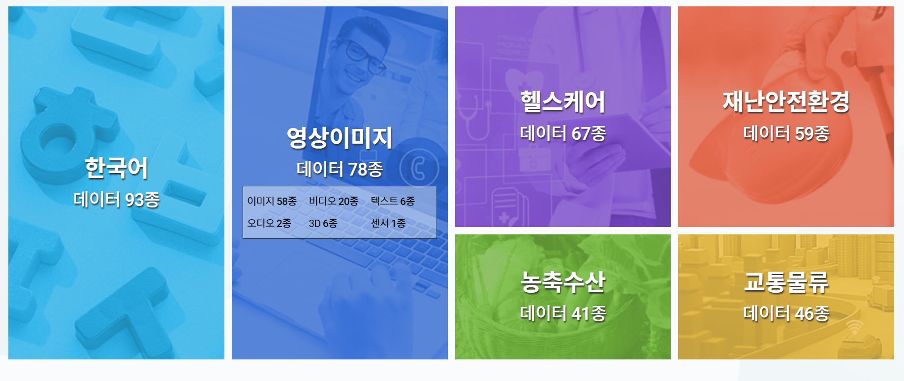
AI Hub 데이터 분류 — 한국어, 영상이미지, 헬스케어, 재난안전환경, 농축수산, 교통물류
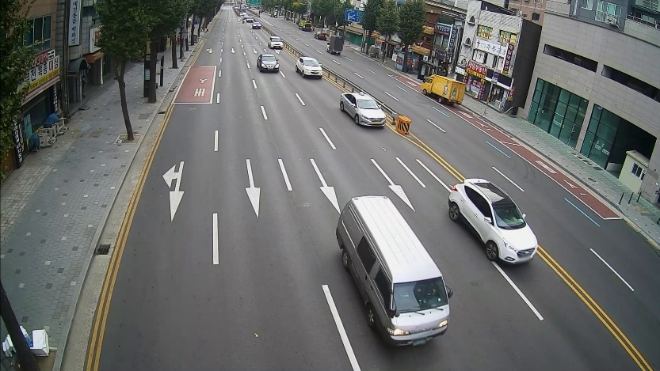
CCTV 교통 영상 — 도로와 차량
지점마다 JSON 하나 · COCO 형식
박스와 번호
"bbox": [ x1, y1, x2, y2 ] 두 꼭짓점
"category_id": 1 승용차
"category_id": 3 대형버스
"category_id": 7 보행자
5주차 외벽은 사진 한 장에 답이 하나였다. 탐지는 답이 여러 개고 각각에 위치가 붙는다.
YOLOv5 는 우리 CCTV 데이터를 본 적이 없다. 그런데도 차와 사람을 찾아낸다.
도구를 고르는 기준은 순위표가 아니라 우리 데이터의 생김새다.
--img 640 으로 바꿔 다시 돌려 보자. 앞차가 잡히는가?
해상도만 바꿔 다시 돌렸다
yolov5s · 같은 사진 · 신뢰도 0.1 · 실행 결과
--img 1920 승합차 0.17 · 헛것 ‘laptop’
--img 640 승합차 0.71 · 흰 차 0.88
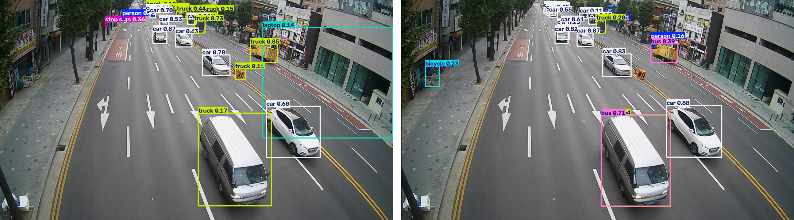
왼쪽 1920 으로 돌린 탐지 결과, 오른쪽 640 으로 돌린 탐지 결과
가까운 큰 차는 배운 크기(640)에서 잘 잡히고, 먼 작은 차는 1920 이 더 잡는다.
정답 해상도는 없다 — 무엇을 셀지에 따라 고른다. CCTV 는 화각이 고정이니 한 번 정해 두면 된다.
실무
이건 다시 연구하지 않는다
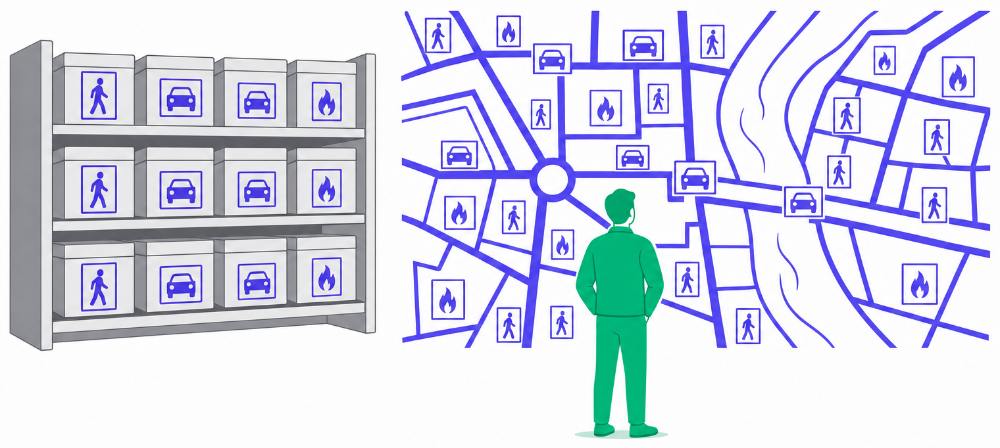
완제품 탐지기가 놓인 선반을 지나쳐 도시 지도를 바라보는 사람
예전에는
이게 정말 사람인지 판단하려고 회귀도 돌리고 통계도 내고 별의별 짓을 다 했다.
지금은
상용 감시 도구도 상당수가 “YOLO 몇 버전이냐” 만 물어보면 된다. 가중치는 분야별로 계속 공개된다.
여러분이 만들 것은 탐지기가 아니다.
탐지 결과로 무엇을 알아낼지 — 거기부터가 도시공학의 몫이다.
2부 · 분할
물건을 세는가, 땅을 칠하는가
도시공학에서 제일 많이 쓰는 것이 분할이다 — 도시 환경 분석에 그대로 들어간다.
왼쪽을 보고 오른쪽을 그린다
AI Hub · 토지피복지도 항공위성 이미지
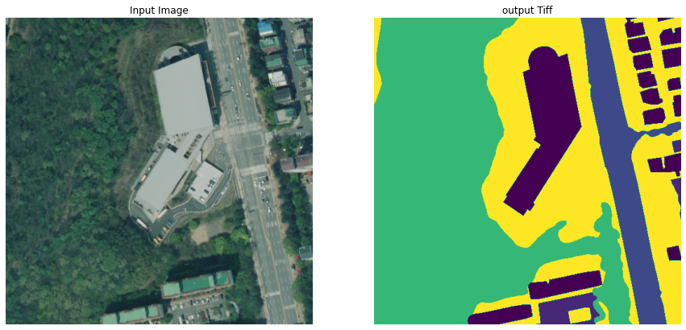
왼쪽 항공 영상 입력, 오른쪽 사람이 그린 토지피복 라벨
이 정도로 정교한 이유 — 한 과제당 1년에 30억~70억. 수백에서 천 명이 달려들었다.
사람이 이미지 위에 일일이 그린 것이다. 라벨링 노동이 곧 데이터의 값어치다.
라벨은 그림이 아니다
TIFF 라스터 · 1채널 · 픽셀에 코드
컬러로 보이는 건 그 코드에 색을 입혀 출력한 것뿐이다.
라스터는 층을 원하는 만큼 만들고 메타에 좌표계까지 넣는다 — 지도에 그대로 얹힌다.
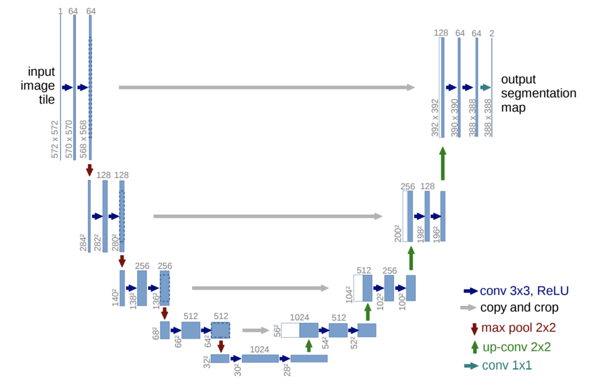
U-Net 구조 — 내려가는 길과 올라오는 길, 그리고 copy and crop
U-Net · 2015
줄였다가
다시 키운다
내려가는 길은 5주차와 똑같다. 크기는 줄고 피처는 늘어난다.
다른 것은 그다음이다. 우리는 플래튼하고 “이게 뭐냐”고 물었다.
U-Net 은 다시 위로 올라가 라벨 이미지 한 장을 그린다.
합성곱을 뒤집었다고 생각하면 된다.
가로로 건너뛰는 선이 핵심이다
실습 구현 · 512×512×3 → 512×512×1
내려가며 잃어버린 세밀한 위치 정보를 같은 높이로 이어 붙인다. 이게 없으면 경계가 뭉개진다.
문제를 단순하게 만든다
아홉 클래스 → 건물이냐 아니냐
이 픽셀이 건물이냐 아니냐 — 그래서 손실은 binary cross entropy. 100 에폭.
실습에서 건물 대신 산림이나 도로로 바꿔 돌려 볼 것. 코드 한 줄이다 — 어떤 클래스가 잘 맞고 안 맞는지가 그대로 발표 거리다.
멀리 내다보기
줄여서 뽑고, 다시 키워서 그린다
— 생성 모델도 같은 일을 한다
분할은 그려 내는 것이 라벨 이미지였을 뿐이다. 생성은 그 자리에 진짜 그림이 들어간다 — 초기 확산 모델의 뼈대가 U-Net 이다. 7주차에서 다시 만난다.
그 뒤의 분할
DeepLabV3+ · 2018 → Segment Anything · 2023
DeepLabV3+ — 연구실이 가져다 쓴 것
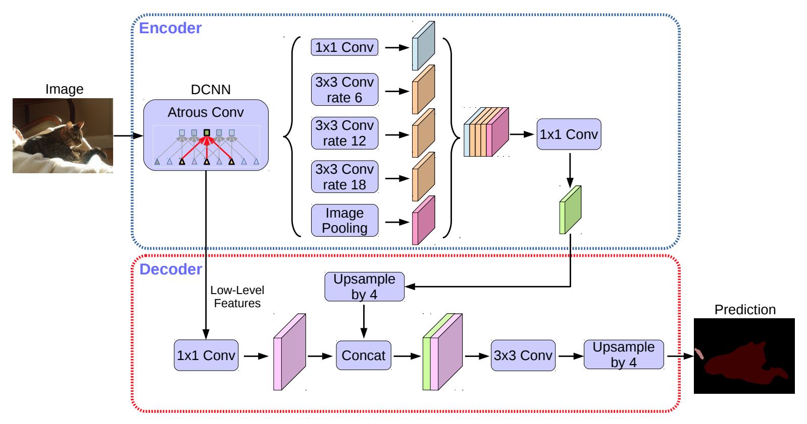
DeepLabV3+ 인코더–디코더 구조
Segment Anything — 오늘의 마지막
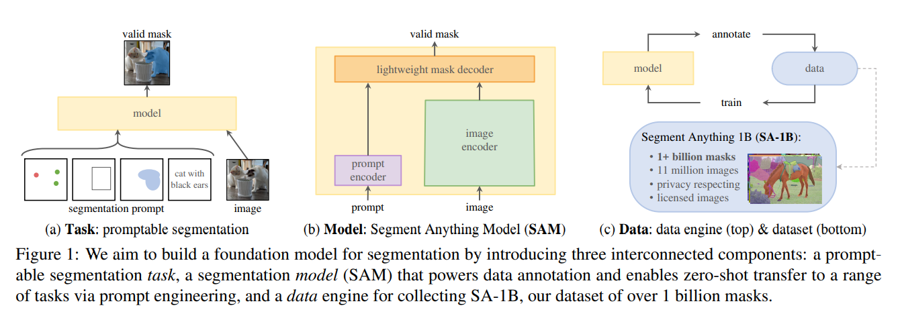
SAM — 프롬프트로 지시하면 그 자리를 잘라낸다
왼쪽을 직접 돌려 보고, 그 한계에서 오른쪽으로 넘어간다.
둘 다 우리가 학습시키지 않는다 — 이미 학습된 것을 불러 쓴다.
도시 데이터 사례
거리를 사람 눈높이에서 잰다
1
Street View
지점마다 사방 사진을 모은다
2
DeepLabV3+
Cityscapes 사전학습 그대로 씌운다
서울 주민 2,350명의 보행 시간 — 녹시율이 기존 녹지 변수보다 더 밀접했다.
저소득층일수록 녹시율 낮은 동네에 살고, 보행이 녹시율에 더 민감했다.
Ki & Lee (2021) Landscape and Urban Planning — 보행
Hipp, Lee, Ki & Kim (2022) — “Deeplabv3+ … Cityscapes”
한양대 도시공학과 이수기 교수 연구실
거리뷰
20~50m 간격, 앞뒤좌우 4장 — 녹시율 · 범죄 · 보행
360° 파노라마
하늘이 열린 정도 — 천공률 · 위요감
과거 시점 거리뷰
같은 자리의 몇 년 전 — 신축 · 철거 · 동네 변화
항공 · 위성
위에서 본 땅 — 토지피복 · 건물 윤곽
CCTV
고정된 화각의 시간 흐름 — 교통량 · 보행량
사람의 평가
두 장 중 하나 고르기 — 안전 · 활기 · 걷고 싶음
논문 619편을 훑은 리뷰 — 대부분이 구글 스트리트뷰였다.
80%가 도시 하나만 봤고, 시간에 따른 변화를 본 연구는 아주 드물다 (Biljecki & Ito, 2021).
원본 사진
시맨틱 — 차들이 한 덩어리
판옵틱 — 1번부터 8번까지 따로
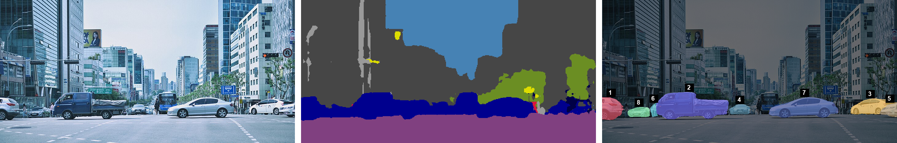
같은 사진 — 원본, 시맨틱 분할, 판옵틱 분할 실행 결과
시맨틱
픽셀마다 클래스 → 비율
녹시율 · 하늘 · 벽
인스턴스 · 탐지
물체마다 따로 → 개수
보행자 수 · 차량 수
판옵틱
배경은 면적, 사물은 하나씩
둘 다 한 번에
이수기 교수 연구실 — 비율은 DeepLabV3+ · Cityscapes (mIoU 82.1%), 개수는 YOLOv3 를 따로 붙였다.
연구 결과 · 한양대 이수기 교수 연구실
방법은 하나, 질문은 다섯
녹지 형평
서울 420개 동 · 사진 13만 8,930장
동별 녹시율 2.7% ~ 30.6% — 열 배 차이
보행
서울 주민 2,350명의 보행 시간
녹시율이 기존 녹지 변수보다 더 밀접
지각
사진 400장 · 240명 · 2,400번 평가
식생·하늘·보도 + / 벽·차량 −
범죄
LA 가로 구간 6만 6천 개
강도 모형 설명력 +63%
변화
과거 시점 거리뷰 · 공사·철거 248곳
약 75%를 찾아냈다
모델은 그대로, 질문이 바뀐다. — 여러분의 몫은 모델이 아니라 질문을 고르는 것이다.
위에서 본 초록 · NDVI
걷는 사람이 본 초록 · 녹시율 GVI
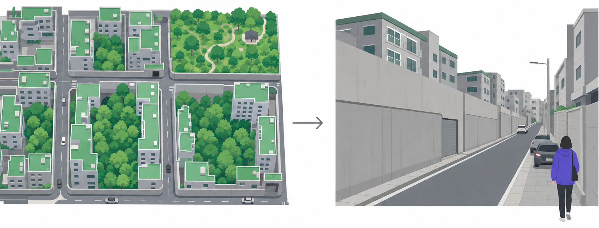
위에서 보면 초록이 많은 동네가 길에서는 회색 벽만 보인다
NDVI 로 재면 — 소득별 녹지 차이가 크지 않다
녹시율로 재면 — 저소득 지역의 가로 녹지가 부족하다
서울 420개 동 · Ki, Kim & Lee (2021) 『국토계획』 · 그림은 개념도
연구 결과 · 해외
분할 결과가 곧 도시 데이터다
홍콩 · 360° 거리뷰 · PSPNet (ADE20K)
R² 0.97
하늘 열린 정도 — 어안렌즈로 직접 찍은 값과 일치
MIT Treepedia · PSPNet (Cityscapes → 거리뷰 500장)
44% → 60%
나무 분할 mIoU — 우리 데이터로 조금 더 학습시키면 오른다
스탠퍼드 · 미국 200개 도시 거리뷰 5천만 장
2,200만 대
세단이 픽업보다 많은 도시 — 88% 가 민주당 지지
마이크로소프트 · 항공사진 분할
1억 3천만 동
미국 건물 윤곽을 그려 공개 — 정밀도 98.5%
Gong 외 2018 · Cai 외 2018 · Gebru 외 2017 PNAS · Microsoft US Building Footprints
1 · 사진
서울 거리 18장
공개 라이선스 사진
3 · 여러분
어느 길을 걷고 싶나
두 장 중 하나 · 20번
4 · 통계
점수 ~ 지표 회귀
Bradley–Terry → OLS
논문의 부호 — 식생·하늘·보도 +, 벽·차량 −. 우리 반도 같은 부호가 나오는가?
사진 18장은 통계적으로 약하다 — 논문은 400장·2,400번이었다. 반 전체 응답을 모을수록 나아진다.
Colab 에서 열기 · 20c 거리지표로_연구하기.ipynb →
Segment Anything · Meta · 2023
점 하나 찍으면 잘라낸다
DeepLab 의 한계 — 클래스 19개 고정. 간판·벤치·화단은 없다
SAM — 사진 1,100만 장, 마스크 11억 개로 학습
클래스 목록이 없다 — 점·박스로 시킨다
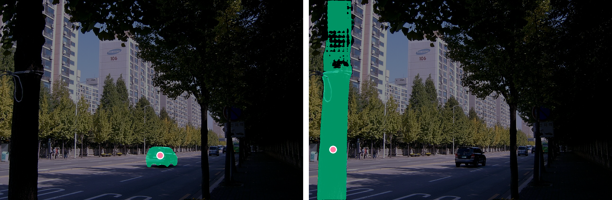
왼쪽 승용차에 점 하나, 오른쪽 가로수 줄기에 점 하나 — SAM 이 잘라낸 마스크
같은 모델, 다시 학습한 것 없이 시키는 말만 바꿨다 — 그래서 파운데이션 모델이라 부른다.
DeepLabV3+
무엇인지 안다
단, 정해진 19개 안에서만. 경계는 뭉툭하다
SAM · 2023
어디까지인지 안다
경계는 정확하다. 그게 무엇인지는 말하지 않는다
SAM 3 · 2025.11
말로 시킨다
“street tree” → 가로수를 전부. 19개가 아니라 아무 명사나
SAM 이 잘라낸 가로수 줄기 — DeepLab 은 그 픽셀의 3분의 2를 ‘기둥’이라 불렀다.
둘은 경쟁이 아니라 짝이다. SAM 의 경계에 DeepLab 의 이름을 붙인다 — 노트북 마지막 실습.
파운데이션은 다시 학습하지 않는다는 뜻이지, 다 안다는 뜻이 아니다.
우리 도시 데이터에 맞는지는 여전히 우리가 확인한다.
3분 · 옆 사람과
하나만 골라 이야기해 보자
Q1 녹시율이 높은 길이 정말 걷기 좋은 길인가? 이 지표가 놓치는 것은 무엇인가?
Q2 탐지 결과는 답이 아니라 새 변수다. 차량 수와 보행자 수가 시간대별로 나오면 무엇을 분석하겠는가?
Q3 항공 영상 분할로 시계열 변화를 본다면, 어떤 클래스의 증감이 도시 정책과 이어지겠는가?
오늘의 질문에 답한다
답의 모양이 다르면
손실이 달라진다
그리고 지난주 마지막에 본 것 — 합성곱은 이미지 전용이 아니다. 옆자리가 의미 있으면 격자 데이터에도 그대로 쓴다.
다음 주 — 지금까지는 있는 이미지를 읽었다. 다음 주는 없던 이미지를 만든다. 예습: 21 GAN.ipynb · 24 Autoencoder.ipynb